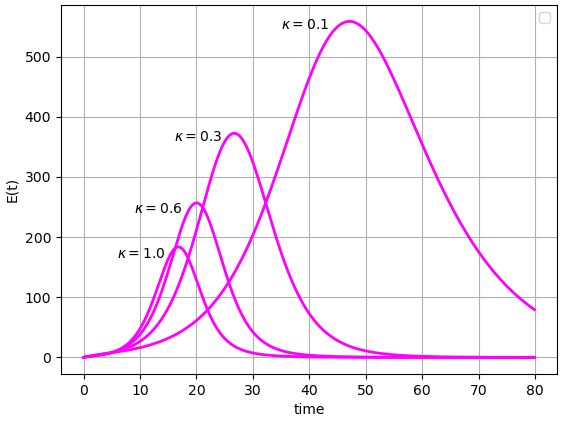

Explore the role of public health strategies in managing disease spread, using compartmental models
Strengthen understanding of the meaning of \(\mathcal{R}_0\text{,}\) which involves a single Infectious person in an otherwise entirely Susceptible population
Determine the threshold for what percentage of vaccine coverage reduces transmission enough so that the number of Infectious cases does not rise
Introduce the SEIR model, where E stands for Exposed-and-incubating, meaning people in the E compartment have already contracted an illness but have not yet become infectious to others
In the first few chapters of this text, we have introduced the basic “hows” for compartmental modeling, as well as a few of the “whys”. Now, we explore the “whys” even further.
One of the most significant ways to use models is for trying and comparing possible public health strategies in simulations before actually carrying them out with real people. Professional-level models can be quite detailed and depend on large amounts of data, and compartmental models are just one of the many types of models implemented. In this chapter, we work with one commonly used strategy: vaccination 1
Vaccination is a widely used public health strategy. Yet the author of this text recognizes that reader thoughts on vaccines may vary for many reasons. As mentioned way back in the “To Students” preface, “I will not tell you how to think.” Instead, the goal of showing vaccines in models is to demonstrate some of the ways we can use models to try different scenarios. Readers can and should continue to think about their own ethics and experiences when interpreting and discussing models
.
Begin in Exploration 6.1 by adjusting a model in a particular way to reduce the occurrence of new infections.
Exploration6.1.Reducing New Infections.
This exploration seeks to reduce the number of new infections by directly reducing the transmission part of the compartmental SIR model shown in (4.3), (4.4), and (4.5). To reduce transmission, we multiply by a term \((1-p)\text{:}\)
\begin{align*}
\frac{dS}{dt} \amp = - (1-p) \beta S I \\
\frac{dI}{dt} \amp = (1-p) \beta S I - \gamma I \\
\frac{dR}{dt} \amp = \gamma I.
\end{align*}
This change to the model reflects that the term \(\beta SI\) in the SIR model represents transmission of disease from the Infectious to the Susceptible population. To reduce transmission, we therefore change the specific term \(\beta SI\) by introducing the multiplier \((1-p)\text{.}\)
Work through the parts below to build understanding of the term \((1-p)\) and the permissible values of \(p\text{.}\)
(a)
Read the Python code below. Think through the factor \((1-p)\) that is multiplied by \(\beta S I\) in both the \(dS/dt\) and \(dI/dt\) equations. We restrict the possible values of \(p\) so that it must be true that \(0 \leq p \leq 1\text{.}\)
After reading and evaluating the Python code, respond to the questions that follow.
Given the restriction that \(0 \leq p \leq 1\text{,}\) what is the range of possible values for the term \((1-p)\text{?}\)
When we multiply the transmission term \(\beta SI\) by \((1-p)\text{,}\) for viable values of \(p\text{,}\) what is the effect? Describe in terms of numbers, in terms of the graphical output of the Python code, and in terms of the impact on a disease outbreak.
(b)
These questions get more specific about the value of \(p\text{.}\) Think logically and mathematically about your answers, and use the Python code freely to experiment with \(p\text{.}\) To help you build a strong sense of the role of \(p\) in the SIR model, you may wish to change the time range, include other information we have seen in past simulations, or make other changes to the code.
What sorts of effects do you see from the term \((1-p)\) when the value of \(p\) is relatively small, that is, \(p\) is just above \(0\text{?}\) In contrast, what sorts of effects do you see from the term \((1-p)\) when the value of \(p\) is relatively large, that is, \(p\) is just below \(1\text{?}\)
What can you say about the boundary values of \(p\text{?}\) That is, what sorts of effects does the term \((1-p)\) have on the SIR model when \(p=0\) or when \(p=1\text{?}\)
Pulling ideas together: as the value of \(p\) increases from \(0\) to \(1\text{,}\) what observations can you make about the output of the SIR model?
Section6.1Vaccines in Compartmental Models
The modeling in this section focuses on reducing transmission of a disease through the use of vaccines. We use the multiplier \((1-p)\) from Exploration 6.1, along with the concept of \(\mathcal{R}_0\) from Chapter 5, to demonstrate the effect of vaccines on the number of people who ever become Infectious in a disease outbreak.
As a reminder, the basic reproduction number\(\mathcal{R}_0\) is the average number of new infections caused by one infectious person in an otherwise entirely susceptible population. This means that \(\mathcal{R}_0\) is not a number we can use to directly describe a population that has been vaccinated against a disease, since a vaccinated population is not entirely susceptible. Instead, we introduce an effective reproduction number \(\mathcal{R}_{\text{eff}}\text{,}\) which is the average number of new infections caused by one infectious person in a population that may not be entirely susceptible, such as a population that has had access to vaccination. One way to pronounce the symbol \(\mathcal{R}_{\text{eff}}\) is “R effective”.
We cannot change the intrinsic value of \(\mathcal{R}_0\text{,}\) but with vaccination, we can work toward the goal of having \(\mathcal{R}_{\text{eff}} \lt 1\text{.}\) If \(\mathcal{R}_{\text{eff}} \lt 1\) in a model that includes vaccines or other public health interventions, then overall numbers of Infectious people do not rise over time. With a few lines of algebra, we can build a relationship between \(\mathcal{R}_0\text{,}\)\(p\text{,}\) and \(\mathcal{R}_{\text{eff}}\text{.}\)
First, we should state a definition for \(p\text{.}\) We define \(p\) to be the fraction of people vaccinated against a disease, noting that the values of \(p\) are therefore restricted to \(0 \leq p \leq 1\text{,}\) where \(p=0\) means no one is vaccinated, and \(p=1\) means \(100\%\) of the population is vaccinated. Initially, we will think of vaccination as being \(100\%\) effective. 2
In the last exercise of For Further Thought 6.3, we update our models to include vaccines that are less than \(100\%\) effective.
When the fraction \(p\) of people are vaccinated, the remaining fraction \((1-p)\) are not vaccinated. Since \(\mathcal{R}_0\) refers to an entirely susceptible population, but only the fraction \((1-p)\) of the population is susceptible, we see that the average number of new infections caused by one infectious person in the vaccinated population is \((1-p)\mathcal{R}_0\text{.}\) In other words:
Our goal in the next few mathematical steps is to use (6.1) to determine a value of \(p\) for which \(\mathcal{R}_{\text{eff}} \lt 1\text{.}\) 3
The goal of \(\mathcal{R}_{\text{eff}} \lt 1\) was set out in the 1983 paper “Parasitic Infections as Regulators of Animal Populations” by Robert M. May, published in American Scientist in the January-February issue. Additional details and explanation appear in the 1988 textbook “Mathematical Models in Biology” by Leah Edelstein-Keshet, published by McGraw-Hill.
Such a value of \(p\) corresponds to a vaccination rate high enough that a disease cannot become an outbreak because \(\mathcal{R}_{\text{eff}} \lt 1\) means that the overall numbers in the population are not expected to rise. Read carefully through the following mathematical steps to see how this value of \(p\) is computed:
\begin{align*}
\mathcal{R}_{\text{eff}} \amp \lt 1 \\
(1-p)\mathcal{R}_0 \amp \lt 1 \\
\mathcal{R}_0 - p \mathcal{R}_0 \amp \lt 1 \\
p \mathcal{R}_0 \amp \gt \mathcal{R}_0 - 1 \\
p \amp \gt \frac{\mathcal{R}_0 - 1}{\mathcal{R}_0} \\
p \amp \gt 1- \frac{1}{\mathcal{R}_0}.
\end{align*}
In the lines above, we started with our goal of causing \(\mathcal{R}_{\text{eff}}\) to be less than one. We then made a substitution using (6.1) and rearranged algebraically until we found a formula showing values of \(p\) that satisfied our goal. Notice that to compute the next-to-last line, we divided by \(\mathcal{R}_0\) without changing the direction of the inequality, which assumed that \(\mathcal{R}_0 \gt 0\text{.}\) This assumption makes biological sense, and is important to point out mathematically, as biology and mathematics should support each other throughout the modeling process.
We now note a particular, special value of \(p\) that is the threshold between two outcomes, which makes it a critical value. The two outcomes are having, or not having, an outbreak. We therefore name this critical value of \(p\) to be \(p_{\text{crit}}\text{:}\)
Investigate the critical value \(p_{\text{crit}}\text{,}\) and the accompanying threshold between outbreak and no outbreak, in Activity 6.2.
Activity6.2.
In this activity, we explore \(p_{\text{crit}}\) through the comparison of two historically widespread diseases: smallpox and measles.
We begin by examining smallpox. Estimates for the value of \(\mathcal{R}_0\) for smallpox range from 3.5 to 6. 4
Estimates that \(\mathcal{R}_0 \approx 3.5-6\) come from the paper “Transmission potential of smallpox in contemporary populations” by Raymond Gani and Steve Leach, published in the journal Nature on 13 December 2001.
Given this range of \(\mathcal{R}_0\) values, what is the range of \(p_{\text{crit}}\) values required in order to reduce the value of \(\mathcal{R}_{\text{eff}}\) for smallpox so that \(\mathcal{R}_{\text{eff}} \lt 1\text{?}\) Suppose that a \(100\%\) effective vaccine is available. What percentage of people would need to be vaccinated, using the values of \(p_{\text{crit}}\) you computed, to prevent a smallpox outbreak, that is, to cause \(\mathcal{R}_{\text{eff}} \lt 1\text{?}\)
Next, we examine measles. Many estimates for the value of \(\mathcal{R}_0\) for measles range from 12 to 18. 5
The paper “The basic reproduction number (R0) of measles: a systematic review”, by Fiona M Guerra, Shelly Bolotin, Gillian Lim, Jane Heffernan, Shelley L Deeks, Ye Li, and Natasha S Crowcroft, states that \(\mathcal{R}_0\) is often approximated as \(12-18\text{,}\) while also stating that the actual range of \(\mathcal{R}_0\) for measles varies even more. This paper was published in The Lancet Infectious Diseases on 27 July 2017.
Given this range of \(\mathcal{R}_0\) values, what is the range of \(p_{\text{crit}}\) values required in order to reduce the value of \(\mathcal{R}_{\text{eff}}\) for measles so that \(\mathcal{R}_{\text{eff}} \lt 1\text{?}\) Suppose that a \(100\%\) effective vaccine is available. What percentage of people would need to be vaccinated, using the values of \(p_{\text{crit}}\) you computed, to prevent a measles outbreak, that is, to cause \(\mathcal{R}_{\text{eff}} \lt 1\text{?}\)
Smallpox has been eliminated: the last natural occurrence was in 1977, and in 1980, the World Health Organization stated that smallpox had been globally eradicated. Measles has not been eliminated: widespread vaccination has reduced cases drastically in many parts of the world, but measles continues to circulate. Given your results in this activity about the values of \(p_{\text{crit}}\) for smallpox and measles, write a few sentences about how \(\mathcal{R}_0\) contributes toward making it more or less feasible to vaccinate enough people to eliminate a disease.
Answer.
For smallpox, \(0.71 \lt p_{\text{crit}} \lt 0.83\text{,}\) meaning approximately \(71\% - 83\%\) of people need to be vaccinated to prevent an outbreak.
For measles, \(0.92 \lt p_{\text{crit}} \lt 0.94\text{,}\) meaning approximately \(92\% - 94\%\) of people need to be vaccinated to prevent an outbreak.
This is open-ended. A typical answer may state that higher values of \(\mathcal{R}_0\) mean we need higher levels of vaccination. Answers may also investigate the reasons why it becomes so much more difficult to achieve higher levels of vaccination, especially on a global scale.
The investigations of Activity 6.2 asked you to compute values of \(p_{\text{crit}}\) for specific diseases. Another aspect of \(p_{\text{crit}}\) is that achieving this critical vaccination level means only that the infection curve, that is, the \(I(t)\) curve, falls from the beginning rather than rising first. However, this does not mean that there are no new infections after the initial cases. Explore this further in Activity 6.3.
Activity6.3.
This activity focuses on understanding long-term model outcomes, with an emphasis on \(p_{\text{crit}}\text{,}\) the critical vaccine coverage value defined in (6.2). Another emphasis is on adjusting our Python code in order to make sure its output truly demonstrates the answers to the questions we are asking.
We use the following SIR model with a term \((1-p)\) to indicate the unvaccinated fraction of people:
\begin{align*}
\frac{dS}{dt} \amp = - (1-p) \beta S I \\
\frac{dI}{dt} \amp = (1-p) \beta S I - \gamma I \\
\frac{dR}{dt} \amp = \gamma I.
\end{align*}
In the default Python code shown below, \(\beta = 0.0003\text{,}\)\(\gamma = 0.3\text{,}\)\(p=0\text{,}\) the initial population values are \(S(0)=2900\text{,}\)\(I(0)=100\text{,}\) and \(R(0)=0\text{,}\) and time runs from \(t=0\) to \(t=25\) days. Begin by running the code, and then work through the steps below to make specific changes to the model.
How many people have had this illness at some point in time, according to this model with its default values? To answer this: notice that everyone who reaches the R compartment must have been sick at some time, so the long-term value of \(R(t)\) provides the answer. Also notice that we need to make sure to run the model long enough that \(I(t)\) reaches \(0\text{.}\) Only then will \(R(t)\) be evaluated at a large enough value of \(t\) for us to know the total number of people who become ill.
Compute the value \(p_{\text{crit}}\) for this model, showing your work. Then run the model using the value you computed for \(p_{\text{crit}}\) and re-answer the question above: how many people get the illness at some point in time, according to this model, when \(p=p_{\text{crit}}\text{?}\)
Compare your answer above, regarding how many people get the illness at some time in the situation when \(p=p_{\text{crit}}\text{,}\) with the initial number of Infectious people in the model. How many people must have gotten the illness sometime after the original Infectious people? Notice that this means that even when \(\mathcal{R}_{\text{eff}} \approx 1\text{,}\) a significant number of additional people can contract the illness being studied. However, the Infectious population curve \(I(t)\) does not rise: it instead appears as level or decreasing.
We may want to see for ourselves, or demonstrate to others, that the Infectious curve is truly not rising when \(p=p_{\text{crit}}\text{.}\) The default graph in the Python code for this activity is not the most helpful to us because \(S(0)\) is so large relative to \(I(0)\text{,}\) which makes it challenging to see the details of the curvature of the \(I(t)\) curve. To see just the \(I(t)\) curve, then, we can comment out the lines of code that show the \(S(t)\) and \(R(t)\) curves. Do this: comment out those lines, and produce a graph showing just the \(I(t)\) curve.
Answer.
The default model says the long-term value of \(R(t)\) is \(2802\text{,}\) but at \(t=25\text{,}\) there are still people in the \(I(t)\) compartment. Use a larger value of \(t\) to find that \(2829\) people have the illness at some time during the outbreak. (State, and show, how large you made your value of \(t\text{.}\))
The value of \(p_{\text{crit}}\) is \(0.\overline{6}\text{,}\) using (5.1) to compute \(\mathcal{R}_0\) and then (6.2) to compute \(p_{\text{crit}}\text{.}\) Approximating \(p_{\text{crit}}\) as \(0.67\) and setting a large enough value of \(t\) leads to the conclusion that \(692\) total people have the illness at some time.
The answer above said that \(692\) people had the illness at some time, and we used the value \(I(0)=100\text{.}\) This means that after the initial \(100\) people, another \(592\) got the illness. (For readers who approximated \(0.\overline{6}\) differently than \(0.67\text{,}\) your answers may vary somewhat.)
The first and third lines after “#Plotting commands are below” should be commented out, that is, the symbol “#” should be placed at the start of each of these lines. Then run the code block again to produce just the \(I(t)\) graph.
We now pause our modeling for a moment to provide some extra vocabulary and commentary on vaccines. When vaccines are studied and approved for use, researchers demonstrate their efficacy and effectiveness. Both terms consider how many people within a population of vaccinated individuals get a disease, compared with how many people within a comparable population of unvaccinated individuals get the same disease. If, for instance, \(75\%\) fewer people in the vaccinated population get the disease, then we say the vaccine has an efficacy or effectiveness of \(75\%\text{.}\) 6
Notice what the \(75\%\) does NOT mean: it does NOT mean that only \(75\%\) of people are protected by the vaccine, or that the vaccine only “works” \(75\%\) of the time.
The word efficacy specifies that the comparison of vaccinated and unvaccinated populations happens within a clinical trial. The word effectiveness indicates that the vaccine is being studied for populations in the real world. While clinical trials do include a range of different people, effectiveness often differs from efficacy.
Vaccine outcomes extend beyond affecting disease transmission. One common outcome is reducing the intensity of illness in individuals who have been vaccinated, yet who still become sick. This and other outcomes can be included in models, however such models tend to be more detailed than those we are studying right now. For this reason, this chapter focuses only on vaccine models that show reduced transmission.
Much of this section has focused on vaccines, which are a valuable element of compartmental models. Another important aspect of disease spread is the incubation period of an illness. The SEIR model, described in Section 6.2, incorporates this incubation period.
Section6.2Including an Incubation Period: The SEIR Model
We introduce here the SEIR model. The new compartment, E, stands for Exposed-and-incubating. The population \(E(t)\) therefore represents people who have contracted an illness, but who are not yet infectious. As the name “SEIR” suggests, this model has four compartments.
Now that we have worked with the SI and SIR models, you may well have ideas in mind for how the SEIR model should look. Try these out in Activity 6.4.
Activity6.4.
How do you believe the SEIR model should appear? Demonstrate your ideas for this activity:
Draw the SEIR model as a compartmental diagram. Carefully label each compartment and each arrow. Do not include vaccination in this model.
Write the differential equations of the SEIR model. Do not include vaccination.
Compare the compartmental diagram you drew with the differential equations you wrote. Are they compatible with each other? That is, do they describe the same model, with the same flow of people through compartments?
Answer.
One possible compartmental diagram appears below.
Figure6.1.Compartmental diagram of a model of HIV/AIDS, using descriptions instead of formulas for each arrow
One key aspect of this diagram is that the term \(\beta SI\) appears on the arrow from \(S\) to \(E\text{.}\) In the SIR model, the arrow from \(S\) to \(I\) involved exactly the compartments at its beginning and end, but with the SEIR model, there is a different pattern.
Notice the arrow labeled \(\kappa E\text{.}\) The flow out of the E compartment depends only on the population \(E(t)\) and the amount of time typically spent as Exposed-and-incubating, similar to how the flow out of the I compartment in the SIR and SEIR models depends only on the population \(I(t)\) and the amount of time spent as Infectious. An important comment here is that this answer key uses the parameter \(\kappa\) for the rate governing the flow out of the E compartment, but there is no reason at all that you should have chosen the Greek letter \(\kappa\) for this rate! Whatever letter you chose, as long as it is not a letter already in use elsewhere in the model, is an excellent choice.
The following differential equations represent the SEIR model:
\begin{align*}
\frac{dS}{dt} \amp = - \beta S I \\
\frac{dE}{dt} \amp = \beta S I - \kappa E \\
\frac{dI}{dt} \amp = \kappa E - \gamma I \\
\frac{dR}{dt} \amp = \gamma I.
\end{align*}
Your answer should look similar, but you may have selected a different parameter instead of \(\kappa\text{.}\)
Your answers for the first two parts should definitely be compatible. If they are not, whether in this activity or ever in your modeling career, then that is a time to re-evaluate your work. This is one of many ways we can double-check our modeling work: when we describe a model in different formats, such as in a diagram and by means of equations, the different formats should agree with each other.
Now that you have built an SEIR model in Activity 6.4, you can explore its compartmental diagram and differential equations. To start, notice that we can estimate the value of \(\kappa\) similarly to how we estimated the value of \(\gamma\) in (4.1) and (4.2), using the average incubation time for a disease:
\begin{align}
\frac{1}{\kappa} \amp \approx \mbox{average length of time an individual spends in compartment E} \tag{6.3}
\end{align}
or:
\begin{align}
\frac{1}{\kappa} \amp \approx \mbox{average incubation time for a disease.} \tag{6.4}
\end{align}
Next, it is helpful with the newly introduced SEIR model to envision how solutions should look, understand how the value of the new parameter \(\kappa\) affects solutions, and simply play around with the equations and different parameter values so that you can build your intuition for this model. Begin these investigations in Activity 6.5.
Activity6.5.
This activity provides a venue for you to play with the SEIR model. Begin by thinking through how you expect SEIR solution curves to appear, and then use Python code to create these solutions and see how they respond to changing parameters.
Do a brief sign analysis of the SEIR model. Is it possible for the \(S(t)\text{,}\)\(I(t)\text{,}\) or \(R(t)\) curves in the SEIR model to behave in any ways that are fundamentally different than how these curves behave in the SIR model? In particular: within Section 5.1 we discussed the ways these three curves in the SIR model could fall, or rise and fall, or rise. Can these curves behave any differently in the SEIR model? And what does sign analysis tell you about how the \(E(t)\) model can possibly behave?
Run the Python code below, and observe the curve \(E(t)\text{.}\) Does it behave the way you predicted in the first part of this Activity? (It should.)
Next, make a note of the long-term number of people who become sick in this model. Then make \(\kappa\) larger and note the newly computed long-term number of people who become sick in the model. Try this for multiple values of \(\kappa\text{.}\) What pattern(s) do you observe?
Continue the Python investigation of different values of \(\kappa\text{.}\) Start with \(\kappa = 0.1\text{,}\) then run the model with \(\kappa = 0.2\text{,}\)\(\kappa = 0.3\text{,}\) and so on, up to \(\kappa = 1.0\text{.}\) Describe how the \(E(t)\) curve changes as \(\kappa\) goes through these changes. Notice that you can focus in on the \(E(t)\) curve by commenting out the other three solution curves, similarly to how we did in Activity 6.3.
Answer.
As in the SIR model: the \(S(t)\) curve can only fall or remain level. The \(I(t)\) curve can both rise and fall, and can remain level. The \(R(t)\) curve can only rise or remain level.
Sign analysis of the SEIR model shows that the \(E(t)\) curve has the possibilities of both rising and falling, as well as remaining level.
You should observe that regardless of the value of \(\kappa\text{,}\) the long-term value of \(R(t)\) is 1960, given the other default values in the Python code. There are many additional observations you can make about the dynamics of how the population reaches its long-term values, and the next part of this Activity addresses several such observations.
As \(\kappa\) increases, the \(E(t)\) curve tends to reach lower and lower peak values, and these peak values occur at earlier times \(t\text{.}\) Sample \(E(t)\) curves, with their \(\kappa\) values, appear in the graph below.

Figure6.2.Possible \(E(t)\) curves for the SEIR model, with \(\kappa\) varying
For readers including Chapter 13 on computing \(\mathcal{R}_0\text{,}\) you may wish to try the steps for computing \(\mathcal{R}_0\) in the SEIR model. The answer appears below, yet this is a great time to test yourself. Completing the steps and confirming your results below lets you gain practice now, before perhaps trying to compute \(\mathcal{R}_0\) on a future model where no answer is given.
The formula in (6.5) can be rearranged in order to use information about \(\mathcal{R}_0\text{,}\)\(\gamma\text{,}\) and \(N\) to compute a reasonable range of \(\beta\) values in a model. We have seen how to estimate \(\gamma\) and \(\kappa\) in (4.1), (4.2), (6.3), and (6.3). We therefore have the ability to determine the parameter values for an SEIR model of a specific outbreak. Try this in Activity 6.6.
Activity6.6.
We are now ready to set up a compartmental model for whooping cough, also called pertussis, in a fictional town having 10,000 residents, using information from the New York State Pertussis or Whooping Cough Fact Sheet 8
www.health.ny.gov/publications/2171/
. The fact sheet says that the first stage of pertussis, in which symptoms are similar to those of a cold, lasts one to two weeks. Stage two, which includes the severe cough that gave pertussis the name “whooping cough”, lasts one to two months. The fact sheet also says that pertussis is contagious from the time cold symptoms appear until about three weeks after severe cough starts. The incubation period for pertussis is most often seven to ten days: the incubation period can sometimes be longer, but we focus on the most common lengths of time. We will not include the use of antibiotics in this model.
Use the SEIR model below. Determine as many parameter values as you can, using the information described from the fact sheet. In this model, assume that time is measured in days. It is appropriate for some parameter values to be a range of numbers, rather than a single number, since the fact sheet information includes ranges of time.
\begin{align*}
\frac{dS}{dt} \amp = - \beta S I \\
\frac{dE}{dt} \amp = \beta S I - \kappa E \\
\frac{dI}{dt} \amp = \kappa E - \gamma I \\
\frac{dR}{dt} \amp = \gamma I.
\end{align*}
You should now have determined the range of values for all parameters except \(\beta\text{.}\) Here is extra information: the value of \(\mathcal{R}_0\) for pertussis has been estimated at anywhere from 5.5 to 17, depending on the outbreak in which \(\mathcal{R}_0\) was measured. 9
A nice summary of studies of \(\mathcal{R}_0\) for pertussis appears in “Pertussis: Microbiology, Disease, Treatment, and Prevention” by Paul E. Kilgore, Abdulbaset M. Salim, Marcus J. Zervos, Heinz-Josef Schmitt, published in Clinical Microbiology Reviews in on March 30, 2016.
Use this range of values of \(\mathcal{R}_0\text{,}\) along with the parameters you already determined and the formula in (6.5) for \(\mathcal{R}_0\text{,}\) to solve for \(\beta\text{.}\)
Run the Python code below, making sure to first enter the values from the parameter ranges you have computed for \(\mathcal{R}_0\text{,}\)\(\kappa\text{,}\) and \(\gamma\text{.}\) (These parameter values are set to 0 in the code, so visualizing the model requires you entering the values you determine.) Notice that the code will compute the appropriate value of \(\beta\text{,}\) using the total population of 10,000 and the values you assign to \(\mathcal{R}_0\) and \(\gamma\text{.}\) Make observations about the outcomes of the model. Be sure to adjust the length of time the model runs, or to show just one or two solution curves at a time, or to otherwise alter the code so that you can best see and comment on the results of the model.
Answer.
The incubation period is usually 7 to 10 days, so \(\kappa\) is in the range \(\frac{1}{10}- \frac{1}{7}\text{.}\) (The incubation period can be shorter or longer, and if you included this information, you will have a wider range of values for \(\kappa\text{.}\) This is also valid.)
Pertussis begins to be contagious when cold symptoms appear, and the phase for cold symptoms is one to two weeks. Pertussis is most contagious for up to three weeks after the intense coughing phase begins. Adding these phases together, pertussis is contagious, or most contagious, for four to five weeks, meaning 28 to 35 days. So \(\gamma\) is in the range \(\frac{1}{35}- \frac{1}{28}\text{.}\) (Saying “up to” three weeks suggests people may not be contagious the full three weeks. And pertussis may be contagious, at a lower level, more than three weeks after severe cough begins. You may have built either of these facts into your answer, which may lead to a different answer.)
Rearranging (6.5) leads to \(\beta = \gamma \mathcal{R}_0 / N\text{.}\) Using the range of values \(5.5 \leq \mathcal{R}_0 \leq 17\) and \(\frac{1}{35} \leq \gamma \leq \frac{1}{28}\text{,}\) along with \(N = 10,000\text{,}\) gives the range of values \(0.000157 \leq \beta \leq 0.000607\text{.}\) Your range of \(\beta\) values should be based on the parameter values you determined.
This is open-ended. Make as many observations as you can.
Now that we have discussed public health intervention in the form of vaccines, as well as SI, SIR, and SEIR models, we have learned enough to be able to mathematically model the primary dynamics of many disease outbreaks. These ideas are the core of this course. In Chapter 7 we will think through the big ideas inherent in mathematical modeling. The remaining chapters in Part I focus on connecting data with models and working with two additional ways to significantly extend our use of compartmental models: endemic disease, in Chapter 9, and modeling ideas other than diseases, in Chapter 12.
For Further Thought6.3For Further Thought
1.
Redo Activity 6.6, but convert the time unit to weeks instead of days. To make this change, do the following.
Compute the number of weeks for the incubation period of pertussis. This should be \(\mbox{(the number of days of the incubation period)} / 7\text{.}\) When you then compute \(\kappa\text{,}\) you should obtain a value equal to \(7 * \mbox{(the value you obtained in the previous exercise)}\text{.}\)
Similarly, the value of \(\gamma\) in this exercise should be \(7 * \mbox{(the value you obtained in the previous exercise)}\text{.}\)
For the graphs to appear the same, the horizontal axis should be adjusted. To be precise, the length of the new time axis should equal \(\mbox{(the length of the time axis in the previous exercise) } / 7\text{.}\) To be close, use the nearest number of weeks. For instance, the default time length in the previous exercise is 365 days, which is one year. One year has approximately, but not exactly, 52 weeks. Using 52 weeks in this exercise will give a very similar graph to the 365-day graph from the previous exercise.
Explain mathematically why the unit conversions described in parts (a.), (b.), and (c.) are the correct conversions for converting the model’s time scale from days to weeks. Show graphs from both this exercise and the previous exercise to demonstrate that the model results are the same when we convert the units of time. For better clarity: update the label for the time axis in each graph to say “days” or “weeks” instead of “time”, to make clear which time unit is being used in the graph.
2.
Update Activity 6.6 to include vaccine. Include the multiplier \((1-p)\) where appropriate, adapting our work from Exploration 6.1 and Activity 6.3 to the SEIR model.
Compute \(p_{\text{crit}}\) for pertussis, using the information that \(\mathcal{R}_0\) for pertussis can be between 5.5 and 17, depending on the outbreak. Your results for \(p_{\text{crit}}\) will be a range of values.
Adapt the Python code from the second exercise to run the model with a vaccine level at least as large as \(p_{\text{crit}}\text{.}\) Adjust the time scale, show just some of the solution curve graphs, or make any other changes needed, to best see the long-term outcome of the model. Write your observations of the outcomes of this model, and compare and contrast with the no-vaccine model.
Do some online research to determine the percentage of children in your area, or percentage of all people in your area, who are vaccinated against pertussis. “Your area” can refer to your city, state, province, country, or whatever other region you choose. Run the Python code again, using this percentage for vaccination, and citing the resources in which you found the percentage. Adjust the code as needed so you can best see the results, and describe your findings.
In approximately 2019, researchers found that the whooping cough vaccine had become less effective over time, for a variety of reasons. They investigated the reasons and made changes. Read about this in from at least three sources, including general news sources as well as government-led websites, and report on your findings.